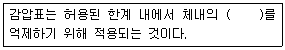

잠수기능사 (2011-10-09 기출문제)
1과목: 잠수물리
1. 저온 하에서 잠수복을 착용하지 않은 채 잠수를 하는 경우 체온이 급격히 떨어지는 이유와 가장 관계가 있는 것은?
- 열의 복사
- 열의 대류
- 열의 전도
- 열의 방사
(정답률: 78%)

2. 다음 중 수중에서 가장 먼 곳까지 투과되는 것은?
- 주황
- 빨강
- 노랑
- 파랑
(정답률: 90%)
3. 수면에서 심호흡을 한 후 호흡을 멈춘 상태로 물속 10m 수심까지 잠수하였을 경우 허파 내부의 공기체적(부피)의 변화는?
- 변화가 없다.
- 체적이 감소한다.
- 체적이 증가한다.
- 체적이 증가하다 감소한다.
(정답률: 82%)
4. 해파가 해안으로 접근해오면 파도의 속도는 어떠한 변화를 보이는가?
- 조석작용에 의해 감소된다.
- 염분도 증가에 따라 가속된다.
- 해저의 마찰에 의해 가속된다.
- 해저의 마찰에 의해 감속된다.
(정답률: 70%)
5. 태평양에서 무역풍과 가장 관계가 있는 해류는?
- 북적도해류
- 적도반류
- 수중피류
- 쿠릴해류
(정답률: 78%)
6. 잠수 호흡 기체인 헬륨에 관한 설명 중 틀린 것은?
- 색, 맛, 냄새가 없는 매우 가벼운 기체로 다른 원소와 잘 결합하는 불안정한 기체다.
- 불활성 기체로 질소마취와 같은 작용이 없다.
- 가벼우므로 흡기 저항이 적어 심해잠수에 이용된다.
- 음성이 똑바르게 나오지 않는 결점이 있다.
(정답률: 67%)
7. 수면에 떠 있는 물체가 받는 부력의 양은?
- 그 물체의 무게와 같다.
- 그 물체의 부피만한 물의 무게와 같다.
- 물에 떠있는 부피의 무게와 같다.
- 물속에 잠긴 부피의 물의 무게와 같다.
(정답률: 56%)
8. 수중에서의 소리속도를 공기에서의 소리속도와 비교하면?
- 4배 정도 빠르게 전달된다.
- 6배 정도 빠르게 전달된다.
- 8배 정도 빠르게 전달된다.
- 같다.
(정답률: 93%)
9. 너울이 해안에 가까워지면 어떻게 변하는가?
- 파장이 짧아지고 파고는 낮아진다.
- 파장이 길어지고 파고는 높아진다.
- 파장이 길어지고 파고는 낮아진다.
- 파장이 짧아지고 파고는 높아진다.
(정답률: 69%)
10. 다음 중 비활성 기체가 아닌 것은?
- N2
- O2
- He
- Ne
(정답률: 66%)
11. 잠수사에게 공급되는 호흡기체의 압력이 잠수사의 허파압력보다 낮으면 호흡할 때 어떤 현상이 나타나는 가?
- 흡입과 배출이 모두 쉽다.
- 흡입은 어렵고 배출은 쉽다.
- 흡입은 쉽고 배출은 어렵다.
- 흡입과 배출이 모두 어렵다.
(정답률: 77%)
12. 물안경 압착을 방지하려면 어떻게 해야 하는가?
- 코로 공기를 물안경 속으로 불어 넣는다.
- 물안경을 꽉 조여 맨다.
- 물안경을 느슨하게 맨다.
- 좋은 물안경을 쓴다.
(정답률: 92%)
13. 다음 ( ) 안에 알맞은 말은?

- 산소
- 질소
- 압력
- 수소
(정답률: 86%)
14. 상어를 만났을 때의 조치법이나 상어출현의 예방법과 가장 거리가 먼 것은?
- 어둡고 반사되지 않는 잠수복을 착용한다.
- 상어가 공격행동을 보일 때는 막대기, 작살, 칼 등으로 상어의 코 부분을 내리치거나 찔러 방어한다.
- 오리발(핀)로 물소리를 크게 내어 도망가게 한다.
- 고기를 사냥하지 않는다.
(정답률: 86%)
15. 100% 산소를 사용하는 폐쇄식 스쿠버 잠수의 안전수칙 중 가장 중요한 것은?
- 주기적인 탄산가스 농도 확인절차 준수
- 주기적인 산소 농도 확인절차 준수
- 잠수시간 준수
- 허용 잠수수심 준수
(정답률: 54%)
2과목: 잠수위생
16. 체구 또는 체질, 연령에 따라 감압병 발생률의 차이가 있다고 볼 때, 다음 중 감압병 발생률이 높은 것끼리 연결된 것은?
- 비만한 사람 - 젊은 사람
- 비만한 사람 - 늙은 사람
- 비만하지 않은 사람 - 젊은 사람
- 비만하지 않은 사람 - 늙은 사람
(정답률: 92%)
17. 기포(氣疱)가 혈류를 차단하여 생기는 증세는?
- 공기색전증
- 종격통기증
- 피하기종
- 기흉
(정답률: 90%)
18. 감압정지 시 정지 위치는 잠수사 몸의 어느 부분을 기준으로 하여야 하는가?
- 머리
- 목
- 가슴
- 허리
(정답률: 94%)
19. 인공호흡을 할 때 권장되는 1분 당 호흡 횟수는? (단, 응급자의 맥박이 있으며, 정상적인 호흡량으로 호흡하는 경우이다.)
- 6회 이상
- 10 ~ 12 회
- 13 ~ 15 회
- 15회 이상
(정답률: 83%)
20. 잠수사가 감압증의 고통을 받을 때 해야 할 조치중 틀린 것은?
- 쇼크를 방지한다.
- 산소를 공급한다.
- 즉시 물에서 감압한다.
- 감압실로 이송한다.
(정답률: 69%)
21. 스쿠버 잠수를 할 때 폐를 손상시키는 가장 큰 원인은?
- 정상보다 빨리 상승하는 것
- 감압정지의 생략
- 정상보다 느리게 상승하는 것
- 상승 숨을 참는 것
(정답률: 75%)
22. 잠수사가 오한을 느끼기 시작하는 물의 온도는?
- 17℃
- 21℃
- 23℃
- 26℃
(정답률: 71%)
23. 압축기체로 호흡하던 잠수사가 상승 중 호흡을 멈추면 어떤 건강 장애가 발생하는가?
- 중증 감압병
- 허파 파열증
- 산소 독성
- 벤드
(정답률: 76%)
24. 수중에서 의식을 상실한 잠수사가 타인에 의하여 물 위로 끌려올려질 때 의식상실자에게 발생할 수 있는 가능성이 가장 높은 건강장애는?
- 감압병
- 압착증
- 허파 파열
- 척추손상
(정답률: 71%)
25. 산소 중독 증상이 아닌 것은?
- 몸이 나른해지고 정신이 흐려진다.
- 근육의 경련과 발작
- 멀미와 현기증
- 호흡곤란과 시야가 좁아진다.
(정답률: 44%)
26. 중량벨트의 착용에 대한 설명으로 옳은 것은?
- 체중의 1/5 무게의 납벨트를 착용한다.
- 부력조절기 착용 시 중량벨트는 가볍게 착용한다.
- 쉽게 풀 수 있도록 맨 마지막에 착용한다.
- 양성부력을 얻을 정도의 무게를 착용한다.
(정답률: 66%)
27. 산소(O2) 가스(GAS) 저장통의 색깔은?
- 적색
- 녹색
- 주황색
- 흑색
(정답률: 91%)
28. 수상(水上)에 요구하지 않더라도 수퍼라이트-17 헬멧을 착용한 2명의 잠수사가 수중에서 서로 통화가 가능하려면 통화선은 몇 가닥이어야 하는가?
- 2 가닥
- 3 가닥
- 4 가닥
- 6 가닥
(정답률: 74%)
29. 일반적으로 표면공급식 장비의 생명줄(umbilical)은 어떻게 사리는가?
- 8자 모양으로 하고 양 끝단이 확인되도록
- 작은 원에서 시작하여 큰 원 모양으로
- 큰 원에서 시작하여 작은 모양으로
- 잔체 길이에 따라 적당한 크기의 타원형으로
(정답률: 80%)
30. KMB 밴드 마스크와 헬멧에서 역지 밸브(one-way valve)의 역할은?
- 기체 공급호스의 압력이 높아지지 않게 한다.
- 비상기체동의 기체를 공급한다.
- 잠수사에게 압착이 일어나지 않게 한다.
- 안면창의 김서림을 제거한다.
(정답률: 61%)
3과목: 잠수장비
31. 다음 중 KMB 밴드마스크 사용의 장점이 아닌 것은?
- 헬멧에 비하여 가격이 저렴하다.
- 가볍고 사용이 간편하다.
- 활동성이 헬멧에 비해 좋은 편이다.
- 머리 전체를 단단한 재질로 보호해 준다.
(정답률: 84%)
32. 저압용 공기압축기의 공기 저장동에 부착되어야 하는 부속이 아닌 것은?
- 압력게이지
- 저장 밸브
- 안전 밸브
- 드레인 밸브
(정답률: 47%)
33. 표면공급식 장비의 역지밸브(one way valve) 작동에 대한 설명이 가장 적합한 것은?
- 외부 압력에 의해 작동한다.
- 내부 압력에 의해 작동한다.
- 수압에 의해 작동한다.
- 양판(poppet)이 스프링에 의해 작동한다.
(정답률: 63%)
34. 공기압축기에 여과 필터를 설치해야 하는 이유와 가장 거리가 먼 것은?
- 수분을 제거하기 위해서
- 공기를 깨끗하게 하기 위해서
- 일산화탄소를 제거하기 위해서
- 먼지를 제거하기 위해서
(정답률: 64%)
35. 다음 계기 중 잠수에서의 필요성과 가장 거리가 먼 것은?
- 수온계
- 잔압계
- 수심계
- 나침반
(정답률: 64%)
36. 바위가 많은 곳에서 표면공급식 잠수장비로써 잠수를 할 때의 적절한 방법과 가장 거리가 먼 것은?
- 항상 공기를 적게 사용한다.
- 공기 호스의 여분을 가지고 다닌다.
- 보조사로 하여금 늦추어진 줄을 당기도록 한다.
- 공기의 사용을 증가시키고 다닌다.
(정답률: 61%)
37. 다음 중 스쿠바나 후카용 2단계 호흡기(regulator)를 사용하는 잠수 시 입안으로 계속 조금씩 물이 들어올 경우 그 원인으로 볼 수 있는 가장 적합한 것은?
- 배출공기 호스에 조그만 구멍이 생겼기 때문
- 마우스 피스에 구멍이 생겼기 때문
- 호스와 호흡기 연결이 헐거워졌기 때문
- 호흡기 배기변에 이물질이 끼거나 상처 때문
(정답률: 81%)
38. 공기압축기 정지 후 기기 내부 잔압을 제거하는 주 이유는?
- 드레인을 제거하여 냄새를 없애기 위하여
- 잔여 공기를 배출하여 배관의 손상을 감소시키기 위하여
- 배관의 성능을 증가시키기 위하여
- 다음 운전시 엔진의 부하를 적게 주어 시동을 용이하게 하기 위하여
(정답률: 78%)
39. 스쿠바 공기통의 목 주변에 찍혀 있는 "FP150" 이라는 각인의 의미는?
- 시험압력
- 상용압력
- 일련번호
- 수압검사일자
(정답률: 89%)
40. 다음 중 수퍼라이트-17 헬멧의 비상기체공급 회로로 옳은 것은?(오류 신고가 접수된 문제입니다. 반드시 정답과 해설을 확인하시기 바랍니다.)
- 비상기체공급→역지변→호흡조절기→잠수사
- 비상기체공급→환기 및 호흡조절기→잠수사
- 비상기체공급→역지변→환기 및 호흡조절기→잠수사
- 비상기체공급→역지변→굴곡관→호흡조절기→잠수사
(정답률: 41%)
41. 비전기식 뇌관의 점화용이며 사용 전 15 cm를 자르는 것은?
- 펜트리트
- 다이너마이트
- 도화선
- 도폭선
(정답률: 80%)
42. 국내에서 재압챔버와 관련하여 기준과 규정을 정하고 있는 법령은?
- 고압가스안전관리법
- 산업안전보건법
- 산업안전보건법시행령
- 산업보건기준에 관한 규칙
(정답률: 40%)
43. 다음 중 동일한 렌즈를 사용하여 촬영하였을 때 피사계 심도에 대한 설명이 맞는 것은?
- 촬영거리와 피사계심도는 무관하다.
- 촬영거리가 멀수록 피사계심도는 깊다.
- f/stop 값이 적을수록 피사계심도가 깊다.
- 촬영거리가 가까울수록 피사계심도가 깊다.
(정답률: 45%)
44. 구조용 체인 한 절(shot)의 길이는?
- 약 18m
- 약 27m
- 약 35m
- 약 45m
(정답률: 76%)
45. 와이어로프의 파단력 계산공식은?
- C2 × 0.9톤
- C2 × 1.2톤
- C2 × 4톤
- D2 × 6톤
(정답률: 60%)
4과목: 잠수작업
46. 도화선이나 도폭선을 사용 전 끝에서 15cm(6인치) 정도 절단해야 하는 이유는?
- 침수 및 부식의 우려 때문
- 폭발의 위험 때문
- 끝단에는 안전을 위해 이물질로 채워졌기 때문
- 내수성 제재로 되어 있기 때문
(정답률: 58%)
47. 굵기가 다른 로프의 연결 시 사용되는 결색은?
- 묶기 매듭(Sheet Bend)
- 콘스크릭터 매듭(Constrictor Knot)
- 닻줄 매듭( Anchor Bend)
- 겹 감아 매듭(Rolling Hitch)
(정답률: 60%)
48. 좌초선을 이초할 때 사용되는 방법이 아닌 것은?
- 부력을 최대한 복원시킨다.
- 해저면과의 마찰력을 증가시킨다.
- 조차를 이용한다.
- 구조선 예인능력을 극대화시킨다.
(정답률: 72%)
49. 수중에서 잠수사의 눈에 피사체의 거리가 3m로 보일 때 카메라의 뷰파인더로 보는 거리는 얼마로 맞추어야 정확한 촬영이 되는가?
- 3m
- 4m
- 5m
- 6m
(정답률: 46%)
50. 수중 산소-아크 절단 시 공기호스로 사용하였던 것을 산소호스 대용으로 사용할 수 없는 주 이유는?
- 폭발의 위험이 있다.
- 강도가 약하다.
- 연결구가 맞지 않는다.
- 색깔이 틀리다.
(정답률: 77%)
51. 수심 20 m에서 초고온절단봉으로 산소아크절단을 한다면 수심에 따른 압력보정값이 0.1⑤ kgf/cm2 일 때 적절한 산소압력은? (단, 육상산소압력은 6 kgf/cm2 임)
- 약 6 kgf/cm2
- 약 8 kgf/cm2
- 약 10 kgf/cm2
- 약 12 kgf/cm2
(정답률: 44%)
52. 수중용접 작업에 있어서 위보기(over head) 용접의 가장 이상적인 용접작업각도는?
- 15 ~ 45°
- 25 ~ 30°
- 35 ~ 55°
- 45 ~ 65°
(정답률: 67%)
53. 다음 중 수중 촬영 시 고려되어야 할 가장 중요한 사항은?
- 수온
- 수심
- 조석
- 물의 혼탁도
(정답률: 77%)
54. 잠수사는 1년에 1회 이상 일반건강검진을 받도록, 법령에 명시되어 있다. 이를 위반 했을 시 사업주가 받는 벌칙은?
- 300만원 이하의 과태료
- 500만원 이하의 과태료
- 1000만원 이하의 과태료
- 6개월 이하의 징역 또는 300만원 이하의 과태료
(정답률: 72%)
55. 탐색작업이 끝난 후 표준신호로 전환하고자 할 때 적합한 줄신호는?
- 잠수사가 3번을 당긴다.
- 보조사가 4번을 당긴다.
- 잠수사가 7번을 당긴다.
- 보조사가 7번을 당긴다.
(정답률: 66%)
56. 수중용접에 있어서 아크(Arc)의 안정성은 전류에 따라 어떠한가?
- 교류가 직류보다 안정성이 높다.
- 직류가 교류보다 안정성이 높다.
- 직류와 교류는 안정성의 차이가 없다.
- 사용환경에 따라 다르다.
(정답률: 73%)
57. 텐더드 탐색의 설명으로 틀린 것은?
- 다이빙 플랫폼(Diving platform)에서 보조한다.
- 표준탐색 신호를 사용한다.
- 텐딩 라인(Tending line)에 장력을 유지한다.
- 잠수사가 부이 라인(Buoy line)을 타고 내려간다.
(정답률: 71%)
58. 좌초반응력에 대해 설명한 내용 중 틀린 것은?
- 좌초반응력은 좌초선의 부력을 복원하여 줄일 수있다.
- 좌초선의 부력과 선체 무게의 변화에 따라 그 값이 달라진다.
- 좌초된 배를 이초시키는데 필요한 수평 당김의 힘이다.
- 좌초반응력과 바닥의 마찰계수를 알면 이초력을 계산할 수 있다.
(정답률: 61%)
59. 줄신호 중 보조사가 잠수사에게 “상승준비” 하라는 신호는?
- 1번 당김
- 2번 당김
- 3번 당김
- 4번 당김
(정답률: 46%)
60. 피복제(flux)의 설명 중 가장 적합한 것은?
- 전극봉의 강도를 높게 한다.
- 아크를 시작하고 계속 유지시킨다.
- 절연을 방지한다.
- 전기가 봉의 밖으로 계속 흐르도록 유지한다.
(정답률: 67%)